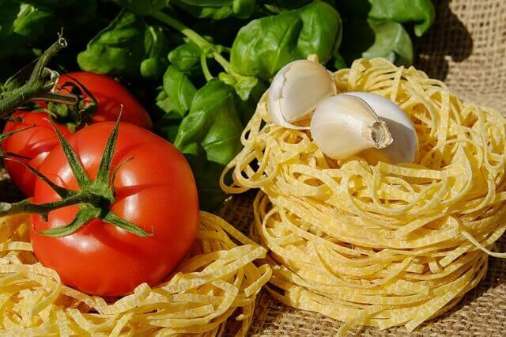

La mejor cocina
19/10/2017
La pasta es un conjunto de alimentos preparados con una masa cuyo ingrediente básico es la harina, mezclada con agua, y a la cual se puede añadir sal, huevo u otros ingredientes, conformando un producto que generalmente se cuece en agua hirviendo. Aunque cualquier harina sirve para este propósito, la mayor parte de las recetas occidentales siguen la tradición italiana y emplean el trigo candeal (Triticum durum); en Oriente son habituales otros materiales, como la harina de alforfón (Fagopyrum esculentum) o de arroz (Oryza sativa).
19/10/2017
La pasta puede ser mojada o seca, existiendo también variedades que se caracterizan por ser rellenas. spaghetti (espaguetis), alargados y con sección circular; tagliatelle (tallarines), similares a los espaguetis pero con sección rectangular o plana. Sus medidas oscilan los 7 mm y 8 mm de ancho; vermicelli similares a los espaguetis pero más delgados. Pappardelle, es una banda plana de hasta 2,5 cm de ancho; fettuccine, alargada y plana, de 6 mm de ancho; linguine (‘pequeñas lenguas’), similar a los fettuccini, pero de 3 mm de ancho; capellini, cabellos de ángel alargados de sección circular, pero muy delgados. Ziti, espaguetis gruesos ahuecados en el centro; bucatini, similar a los ziti pero menos gruesos; capelli d' angelo (‘cabello de ángel’), muy delgado y de rápida cocción.